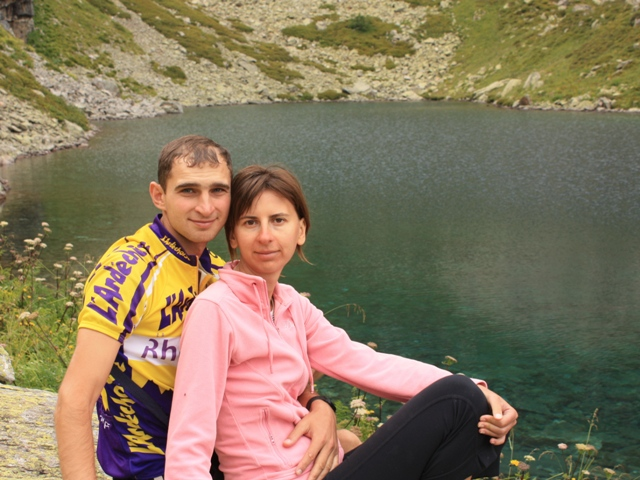
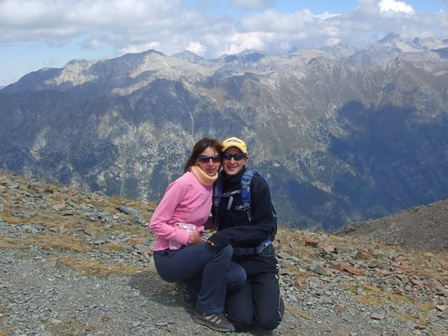
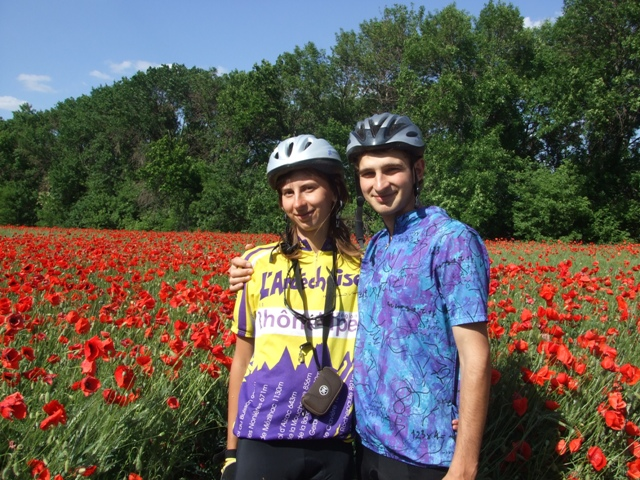

|  |  |  |
Мы очень любим горы. И думаем, что они отвечают нам взаимностью! Когда кто-то говорит: «Умный в гору не пойдет, умный гору обойдет», он забывает или не знает тех, кто ходил и продолжает ходить в эти самые горы… Первые встречи с горами, первые восхождения – как первая любовь остаются на всю жизнь! « Все люди делятся на два вида. На тех, кто хочет жить в безопасности, oни выбирают смерть, им нужна уютная могила. И на тех, кто хочет жить, oни выбирают риск, ведь настоящая жизнь идет с риском рука об руку. Ты когда-нибудь взбирался на вершину горы? Чем выше подъем, тем свежее, тем моложе ты себя чувствуешь. Чем выше риск упасть, чем глубже пропасть, тем острее ощущение жизни... Когда балансируешь между жизнью и смертью, скука исчезает, уже нет пыли прошлого, нет стремления к будущему: настоящее становится острым, как лезвие. Этого достаточно. Ты живешь здесь и сейчас... Покоряя вершину, удаляясь от размеренной, рутинной жизни, человек вновь становится диким, становится частью дикого животного мира. Он чувствует себя тигром, львом или рекой; он опять, как птица, парит в небе, взлетая все выше и выше... » Ошо из главы «О мужчинах»